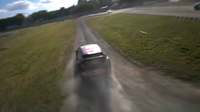
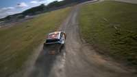
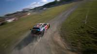
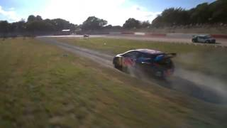
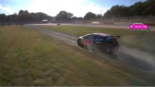
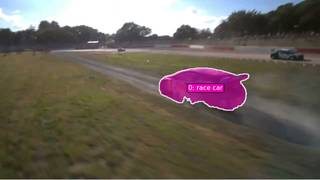
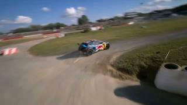
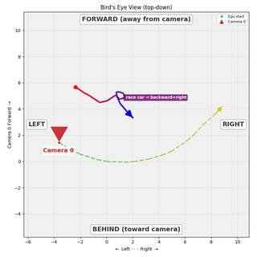

To determine the race car's motion relative to its starting orientation and location, let's analyze the video frames:
- Initial Position and Orientation: In the first frame, the race car is positioned in the center-right of the image, facing away from the camera.
- Observation of Motion: As the sequence progresses through the frames, the car continues to travel in the direction it is facing (away from the camera).
- Path Analysis: While the car follows a slightly curving dirt path, its primary movement is in the direction of its front bumper, which is defined as "forward" relative to its own orientation.
- Evaluating Options:
- A. Moving right: While the car may shift slightly right in the frame, its overall movement is forward.
- B. Moving forward: The car is consistently traveling in the direction it is facing.
- C. Moving left: The car is not moving primarily to the left.
- D. Moving backward: The car is clearly moving in the direction of its front, not its rear.
The most accurate description of the race car's motion relative to its starting orientation is that it is moving forward.
B
import numpy as np # 1. Reconstruct the scene recon = tools.Reconstruct.Reconstruct(InputImages) # 2. Segment the race car across the video seg = tools.SAM3.segment_video_by_text(["race car"], labels=["race car"]) # 3. Extract 3D centroids for the car centroids = [] valid_frames = [] for fi in seg.frame_indices: c = seg.get_centroid_3d(recon, frame=fi, object=0) if c is not None: centroids.append(c) valid_frames.append(fi) centroids = np.array(centroids) if len(centroids) > 0: start_pos = centroids[0] end_pos = centroids[-1] displacement = end_pos - start_pos # The car starts facing away from the camera. # In the reconstructed world, the first camera looks toward -Z. # Let's check the displacement. print(f"Start Position: {start_pos}") print(f"End Position: {end_pos}") print(f"Displacement: {displacement}") # To be more precise, we can look at the BEV. # The BEV will show the trajectory. bev_img = recon.render_bev(masks=seg) show(bev_img) else: print("Failed to track the car.") # Based on visual inspection of the frames: # Frame 0: Car is facing away, moving away. # Frame 14: Car is further away, still moving in the same general direction. # This is "Moving forward" relative to its starting orientation. ReturnAnswer("B")
---------------------------------------------------------------------------
KeyError Traceback (most recent call last)
Cell In[94], line 13
11 valid_frames = []
12 for fi in seg.frame_indices:
---> 13 c = seg.get_centroid_3d(recon, frame=fi, object=0)
14 if c is not None:
15 centroids.append(c)
File SpatialAgent/spatial_agent/kernel_types/per_frame_types.py:203, in PerFrameMask.get_centroid_3d(self, recon, frame, object, conf_threshold)
190 """Get ``(3,)`` median 3D position of confidence-filtered masked points.
191
192 Args:
(...) 200 is empty (safe for arithmetic; use ``np.isnan()`` to check).
201 """
202 mask_2d = self.get_mask(frame, object)
--> 203 local_r = recon.points.get_by_frame_index(frame)
204 pts = recon.points.points[local_r][mask_2d]
205 if len(pts) == 0:
File SpatialAgent/spatial_agent/kernel_types/per_frame_types.py:69, in PerFrameData.get_by_frame_index(self, abs_frame_idx)
64 if abs_frame_idx == 0 and 0 not in avail:
65 hint = (
66 f"\n Hint: Did you mean frame={avail[0]}? "
67 f"Use ABSOLUTE frame indices (from seg.frame_indices), not 0-based local indices."
68 )
---> 69 raise KeyError(
70 f"Frame {abs_frame_idx} not found in {avail}. "
71 f"Available frames: {avail}{hint}"
72 )
73 return self._frame_indices.index(abs_frame_idx)
KeyError: 'Frame 1 not found in [0, 6, 12, 18, 24, 30, 36, 42, 48, 54, 60, 66, 72, 78, 84]. Available frames: [0, 6, 12, 18, 24, 30, 36, 42, 48, 54, 60, 66, 72, 78, 84]'Task Analysis
The objective is to determine the 3D motion of a race car relative to its own starting orientation and location. This is an object-perspective spatial reasoning task.
Coordinate System Resolution: The question asks for motion "relative to his/her/its starting orientation and location." This defines an object-centric coordinate system anchored at the car's position at $t=0$.
- Forward/Backward: Along the axis defined by the car's heading vector at the first frame.
- Left/Right: Along the axis perpendicular to the heading vector and the world-up vector (+Y). I must first establish the car's initial 3D position ($P_0$) and its initial facing direction ($V_{fwd,0}$) in world space, then calculate the displacement vector $\Delta P$ to the final position ($P_{final}$) and project it onto these axes.
Information Needs
- Object Identification: Accurate segmentation masks for the "race car" across the video.
- 3D Geometry: A 3D reconstruction of the scene to obtain world-space coordinates and camera poses.
- Initial State: The 3D centroid of the car in the first frame and its initial heading vector in world space.
- Final State: The 3D centroid of the car in the last frame.
- Visual Confirmation: A BEV (Bird's Eye View) rendering to qualitatively verify the trajectory and starting orientation.
Computation Plan
-
Object Grounding and Segmentation:
- Use
vlm.ask_with_thinkingonInputImages[0]to confirm the race car's presence and appearance. - Use
tools.SAM3.segment_video_by_text(prompts=["race car"], ...)to track the car across all 15 frames. - Programmatically verify that masks are non-empty in the first and last frames.
- Use
-
3D Reconstruction:
- Call
tools.Reconstruct.Reconstruct(InputImages)to generate the 3D point cloud and camera extrinsics.
- Call
-
Determining Initial Orientation ($V_{fwd,0}$):
- Call
vlm.ask_with_thinkingonInputImages[0]to determine the car's heading relative to the camera (e.g., "Is the car facing away from the camera, towards the camera, or to the side?"). - Use the camera's forward vector
recon.extrinsics[0][:3, 2]and right vectorrecon.extrinsics[0][:3, 0]to translate the VLM's relative description into a world-space heading vector $V_{fwd,0}$. - Alternative/Verification: Use
recon.render_bev(masks=seg)and observe the orientation of the bounding box or the start of the trajectory line in the first frame.
- Call
-
Quantitative Motion Analysis:
- Extract the 3D centroid at the first frame $P_0 = seg.get_centroid_3d(recon, frame=fi_start, object=0)$.
- Extract the 3D centroid at the last frame $P_{final} = seg.get_centroid_3d(recon, frame=fi_end, object=0)$.
- Compute the displacement vector: $\Delta P = P_{final} - P_0$.
- Define the initial right vector: $V_{right,0} = \text{cross}(V_{fwd,0}, [0, 1, 0])$ (World-Up is +Y).
- Calculate projections:
forward_component = np.dot(delta_P, V_fwd_0)right_component = np.dot(delta_P, V_right_0)
- Determine the dominant direction:
forward_component > 0$\rightarrow$ Forwardforward_component < 0$\rightarrow$ Backwardright_component > 0$\rightarrow$ Rightright_component < 0$\rightarrow$ Left
-
Visual Cross-Validation:
- Render the BEV:
recon.render_bev(masks=seg, ego_trajectory=True). - Use
show()to inspect the BEV. The trajectory line (red $\rightarrow$ blue) should align with the calculated $\Delta P$, and the starting orientation of the car (bounding box) should align with $V_{fwd,0}$.
- Render the BEV:
Verification Checklist
[
{"priority": "HIGH", "description": "Verify that SAM3 masks accurately cover the race car in both the first and last frames"},
{"priority": "HIGH", "description": "Confirm the initial heading vector V_fwd_0 is correctly derived from VLM description and camera pose"},
{"priority": "HIGH", "description": "Ensure 3D centroids are not NaN and are physically plausible given the scene scale"},
{"priority": "MEDIUM", "description": "Cross-check the quantitative projection results with the qualitative BEV trajectory path"},
{"priority": "MEDIUM", "description": "Verify that the displacement delta_P is significant enough to be distinguished from reconstruction noise"}
]
Fallbacks
- Segmentation Failure: If
segment_video_by_textfails or produces empty masks, I will usevlm.locateon the first frame to get a bounding box and then usetools.SAM3.segment_video_by_box. - Orientation Ambiguity: If the VLM cannot determine the heading from a single frame, I will use
vlm.ask_with_thinkingon a sequence of the first 3 frames to infer the heading from the initial movement. - Reconstruction Noise: If the 3D centroids are unstable, I will average the centroids over a small window of frames at the start and end of the clip.
{ "tool": "vlm.ask_with_thinking", "args": { "visual_input": "InputImages[0]", "question": "Is there a race car in this image? If so, please describe its appearance and location." } }
[VLM Q | thinking] Is there a race car in this image? If so, please describe its appearance and location. [VLM A | thinking] Yes, there are race cars in the image. The most prominent one is a dark-colored rally car with red and blue accents and a large rear wing, located in the center-right and drifting across a dirt and grass area, kicking up dust. There is another light-colored race car further in the background on the paved track to the right.
=== Step 0 Execution Feedback === [SUCCESS] Code executed in 22.86s. [Output] [VLM Q | thinking] Is there a race car in this image? If so, please describe its appearance and location. [VLM A | thinking] Yes, there are race cars in the image. The most prominent one is a dark-colored rally car with red and blue accents and a large rear wing, located in the center-right and drifting across a dirt and grass area, kicking up dust. There is another light-colored race car further in the background on the paved track to the right. [Variables] New/changed: result_0: str [Tool Calls] 1 tool/VLM call(s) this step.
{ "tool": "tools.SAM3.segment_video_by_text", "args": { "prompts": [ "race car" ] } }
=== Step 1 Execution Feedback === [SUCCESS] Code executed in 7.53s. [Variables] New/changed: result_1: PerFrameMask, frames=[0..89] (90 frames) [Tool Calls] 1 tool/VLM call(s) this step.
=== Step 2 Execution Feedback === [ERROR] Skipped: LLM response was not in the required format.
{ "tool": "tools.Reconstruct.Reconstruct", "args": { "frames": "InputImages" } }
=== Step 3 Execution Feedback === [SUCCESS] Code executed in 3.16s. [Variables] New/changed: result_3: Reconstruction, frames=[0..84] (15 frames) [Tool Calls] 1 tool/VLM call(s) this step.
{ "tool": "show", "args": { "image": "result_3.render_bev(masks=result_1)" } }
[image: show_0001]

=== Step 4 Execution Feedback === [SUCCESS] Code executed in 0.32s. [Variables] New/changed: result_4: NoneType [Inline Images] 1 image(s) attached below. Labels: result_3.render_bev(masks=result_1) [show() budget] 249/250 images remaining.
=== Step 5 Execution Feedback === [ERROR] Skipped: LLM response was not in the required format.
{ "tool": "vlm.ask_with_thinking", "args": { "visual_input": [ "InputImages[0]", "InputImages[1]", "InputImages[2]" ], "question": "In the first few frames, which direction is the race car facing relative to the camera? Is it facing away, towards, or to the side (left/right)? Also, is it drifting?" } }
[VLM Q | thinking] In the first few frames, which direction is the race car facing relative to the camera? Is it facing away, towards, or to the side (left/right)? Also, is it drifting? [VLM A | thinking] In the first few frames, the race car is facing away from the camera and is drifting, as evidenced by the dust being kicked up from its rear wheels.
=== Step 6 Execution Feedback === [SUCCESS] Code executed in 10.26s. [Output] [VLM Q | thinking] In the first few frames, which direction is the race car facing relative to the camera? Is it facing away, towards, or to the side (left/right)? Also, is it drifting? [VLM A | thinking] In the first few frames, the race car is facing away from the camera and is drifting, as evidenced by the dust being kicked up from its rear wheels. [Variables] New/changed: result_6: str [Tool Calls] 1 tool/VLM call(s) this step.
=== Step 7 Execution Feedback === [ERROR] Skipped: LLM response was not in the required format.
=== Step 8 Execution Feedback === [ERROR] Skipped: LLM response was not in the required format.
{ "tool": "ReturnAnswer", "args": { "answer": "C" } }
[ReturnAnswer] Answer submitted: C
B
B
B
Task Analysis
The objective is to determine the 3D motion of a race car relative to its own starting orientation and location. This is a trajectory analysis problem in an object-centric coordinate system.
Coordinate System Resolution: The question asks for motion relative to the car's "starting orientation and location." This requires establishing a local coordinate system anchored at the car's position at the first frame ($t=0$):
- Origin: The 3D centroid of the race car at the first frame.
- Forward Axis ($\vec{v}_{fwd}$): The vector pointing from the rear of the car to the front (nose) of the car at the first frame.
- Right Axis ($\vec{v}_{right}$): The vector perpendicular to the forward axis and the world-up axis (defined as $\vec{v}_{fwd} \times \text{up}$).
- Backward Axis: $-\vec{v}_{fwd}$.
- Left Axis: $-\vec{v}_{right}$.
The target variable is the dominant direction of the displacement vector $\vec{D} = \text{Position}{final} - \text{Position}{initial}$ when projected onto these local axes.
Information Needs
- Object Identification & Tracking: Precise 3D masks for the race car across all frames to calculate its centroid.
- 3D Geometry: A 3D reconstruction of the scene to map 2D masks to world coordinates.
- Starting Orientation: The 3D direction the car's nose is pointing in the first frame.
- Trajectory Data: The sequence of 3D centroids from the start to the end of the clip.
Computation Plan
-
Initial Grounding & Orientation:
show(InputImages[0])to identify the race car and its orientation.- Use
vlm.locateto find the normalized coordinates of the nose (front) and the tail (rear) of the race car in the first frame. - Convert these normalized coordinates to pixels using
tools.Geometry.normalized_to_pixel.
-
3D Reconstruction & Segmentation:
- Perform 3D reconstruction:
recon = tools.Reconstruct.Reconstruct(InputImages). - Track the race car across all frames:
seg = tools.SAM3.segment_video_by_text(["race car"], ...)(using the first frame as the prompt frame). - Verification:
show([InputImages[0], seg.visualize(seg.frame_indices[0])])to ensure the mask accurately covers the car.
- Perform 3D reconstruction:
-
Establishing the Local Coordinate System:
- Get the absolute frame index of the first frame:
fi_0 = seg.frame_indices[0]. - Retrieve the 3D world coordinates of the nose and tail using
recon.points[fi_0][y, x]at the pixel coordinates found in Step 1. - Calculate the starting forward vector: $\vec{v}{fwd} = \text{Normalize}(\text{Point}{nose} - \text{Point}_{tail})$.
- Calculate the starting right vector: $\vec{v}{right} = \text{Normalize}(\vec{v}{fwd} \times [0, 1, 0])$ (assuming $+Y$ is up).
- Get the absolute frame index of the first frame:
-
Trajectory Analysis:
- Extract 3D centroids for the first and last frames:
- $P_{start} = \text{seg.get_centroid_3d(recon, frame=fi_0, object=0)}$
- $P_{end} = \text{seg.get_centroid_3d(recon, frame=seg.frame_indices[-1], object=0)}$
- Calculate the total displacement vector: $\vec{D} = P_{end} - P_{start}$.
- Extract 3D centroids for the first and last frames:
-
Directional Projection:
- Compute the projection of $\vec{D}$ onto the local axes:
- $\text{proj}{fwd} = \vec{D} \cdot \vec{v}{fwd}$
- $\text{proj}{right} = \vec{D} \cdot \vec{v}{right}$
- Compare the absolute values of $\text{proj}{fwd}$ and $\text{proj}{right}$ to determine the dominant axis of motion.
- Determine the sign:
- $\text{proj}{fwd} > 0 \rightarrow$ Forward; $\text{proj}{fwd} < 0 \rightarrow$ Backward.
- $\text{proj}{right} > 0 \rightarrow$ Right; $\text{proj}{right} < 0 \rightarrow$ Left.
- Compute the projection of $\vec{D}$ onto the local axes:
-
Visual Cross-Validation:
- Render a BEV plot:
recon.render_bev(masks=seg). - Inspect the trajectory line (red $\rightarrow$ blue) relative to the car's starting bounding box orientation to visually confirm the calculated direction.
- Render a BEV plot:
Verification Checklist
[
{"priority": "HIGH", "description": "Verify the race car mask is accurate and consistent across frames via seg.visualize()"},
{"priority": "HIGH", "description": "Confirm the 3D points for the nose and tail are correctly sampled from the reconstruction"},
{"priority": "HIGH", "description": "Ensure the displacement vector is calculated using absolute frame indices"},
{"priority": "MEDIUM", "description": "Cross-check the numerical projection result with the BEV trajectory visualization"},
{"priority": "LOW", "description": "Sanity check the magnitude of displacement to ensure it is physically plausible for a race car"}
]
Fallbacks
- Mask Failure: If
segment_video_by_textfails or is noisy, I will usevlm.locateto get a bounding box in the first frame and usetools.SAM3.segment_video_by_box. - Orientation Ambiguity: If the nose/tail are not clearly distinguishable in the first frame, I will use
vlm.ask_with_thinkingon the first 3 frames to deter
# Show the first frame to visually ground the object show(InputImages[0]) # Locate the nose (front) and tail (rear) of the race car in the first frame nose_res = vlm.locate(InputImages[0], "Give the (x, y) center coordinates in 0-1000 normalized scale for the nose (front bumper) of the race car. Reply with ONLY the numbers.") tail_res = vlm.locate(InputImages[0], "Give the (x, y) center coordinates in 0-1000 normalized scale for the tail (rear bumper) of the race car. Reply with ONLY the numbers.") print(f"Nose response: {nose_res}") print(f"Tail response: {tail_res}") # Helper to parse "x, y" or "(x, y)" strings into a list of floats def parse_coords(s): # Remove parentheses and split by comma cleaned = s.replace('(', '').replace(')', '').replace('[', '').replace(']', '') return [float(x.strip()) for x in cleaned.split(',')] try: nose_norm = parse_coords(nose_res) tail_norm = parse_coords(tail_res) W, H = InputImages[0].width, InputImages[0].height nose_px = tools.Geometry.normalized_to_pixel(nose_norm, W, H) tail_px = tools.Geometry.normalized_to_pixel(tail_norm, W, H) print(f"Nose pixels: {nose_px}") print(f"Tail pixels: {tail_px}") except Exception as e: print(f"Error parsing coordinates: {e}")
[image: show_0001] [VLM Q | locate] Before answering, first check whether what the question describes is clearly visible in the provided image(s). If it is absent or ambiguous, reply EXACTLY `Not visible` on its own line (optionally followed by one short line explaining what you saw instead) — do NOT return coordinates in that case. Only if the requested target is clearly and unambiguously present, answer the request below. Request: Give the (x, y) center coordinates in 0-1000 normalized scale for the nose (front bumper) of the race car. Reply with ONLY the numbers. [VLM A | locate] 500 480 [VLM Q | locate] Before answering, first check whether what the question describes is clearly visible in the provided image(s). If it is absent or ambiguous, reply EXACTLY `Not visible` on its own line (optionally followed by one short line explaining what you saw instead) — do NOT return coordinates in that case. Only if the requested target is clearly and unambiguously present, answer the request below. Request: Give the (x, y) center coordinates in 0-1000 normalized scale for the tail (rear bumper) of the race car. Reply with ONLY the numbers. [VLM A | locate] 771 486 Nose response: 500 480 Tail response: 771 486 Error parsing coordinates: could not convert string to float: '500 480'
=== Step 1 Execution Feedback === [SUCCESS] Code executed in 11.50s. [Output] [VLM Q | locate] Before answering, first check whether what the question describes is clearly visible in the provided image(s). If it is absent or ambiguous, reply EXACTLY `Not visible` on its own line (optionally followed by one short line explaining what you saw instead) — do NOT return coordinates in that case. Only if the requested target is clearly and unambiguously present, answer the request below. Request: Give the (x, y) center coordinates in 0-1000 normalized scale for the nose (front bumper) of the race car. Reply with ONLY the numbers. [VLM A | locate] 500 480 [VLM Q | locate] Before answering, first check whether what the question describes is clearly visible in the provided image(s). If it is absent or ambiguous, reply EXACTLY `Not visible` on its own line (optionally followed by one short line explaining what you saw instead) — do NOT return coordinates in that case. Only if the requested target is clearly and unambiguously present, answer the request below. Request: Give the (x, y) center coordinates in 0-1000 normalized scale for the tail (rear bumper) of the race car. Reply with ONLY the numbers. [VLM A | locate] 771 486 Nose response: 500 480 Tail response: 771 486 Error parsing coordinates: could not convert string to float: '500 480' [Variables] New/changed: nose_res: str tail_res: str [Inline Images] 1 image(s) attached below. Labels: InputImages[0] [Tool Calls] 4 tool/VLM call(s) this step. [show() budget] 249/250 images remaining.
# Fixed parsing function to handle spaces or commas def parse_coords_robust(s): # Replace commas with spaces, then split by whitespace cleaned = s.replace(',', ' ').replace('(', '').replace(')', '').replace('[', '').replace(']', '') return [float(x) for x in cleaned.split()] # Parse the results from the previous step nose_norm = parse_coords_robust(nose_res) tail_norm = parse_coords_robust(tail_res) W, H = InputImages[0].width, InputImages[0].height nose_px = tools.Geometry.normalized_to_pixel(nose_norm, W, H) tail_px = tools.Geometry.normalized_to_pixel(tail_norm, W, H) print(f"Nose pixels: {nose_px}") print(f"Tail pixels: {tail_px}") # 3D Reconstruction recon = tools.Reconstruct.Reconstruct(InputImages) # Segmentation and Tracking # Using the first frame as the prompt frame seg = tools.SAM3.segment_video_by_text(["race car"], prompt_frame_idx=0) # Verification fi_0 = seg.frame_indices[0] vis = seg.visualize(fi_0) show([InputImages[0], vis]) # Programmatic check for mask area for fi in seg.frame_indices: area = seg.get_mask(frame=fi, object=0).sum() if area == 0: print(f"Warning: mask empty at frame {fi}")
Nose pixels: [384.0, 207.35999999999999] Tail pixels: [592.128, 209.952] [image: show_0002] Warning: mask empty at frame 41 Warning: mask empty at frame 42 Warning: mask empty at frame 43 Warning: mask empty at frame 44 Warning: mask empty at frame 45 Warning: mask empty at frame 46 Warning: mask empty at frame 47 Warning: mask empty at frame 48 Warning: mask empty at frame 49 Warning: mask empty at frame 50 Warning: mask empty at frame 51 Warning: mask empty at frame 52 Warning: mask empty at frame 53 Warning: mask empty at frame 54 Warning: mask empty at frame 55 Warning: mask empty at frame 56 Warning: mask empty at frame 57 Warning: mask empty at frame 58 Warning: mask empty at frame 59 Warning: mask empty at frame 60 Warning: mask empty at frame 61 Warning: mask empty at frame 62 Warning: mask empty at frame 63 Warning: mask empty at frame 64 Warning: mask empty at frame 65 Warning: mask empty at frame 66 Warning: mask empty at frame 67 Warning: mask empty at frame 68 Warning: mask empty at frame 69 Warning: mask empty at frame 70 Warning: mask empty at frame 71 Warning: mask empty at frame 72 Warning: mask empty at frame 73 Warning: mask empty at frame 74 Warning: mask empty at frame 75 Warning: mask empty at frame 76 Warning: mask empty at frame 77 Warning: mask empty at frame 78 Warning: mask empty at frame 79 Warning: mask empty at frame 80 Warning: mask empty at frame 81 Warning: mask empty at frame 82 Warning: mask empty at frame 83 Warning: mask empty at frame 84 Warning: mask empty at frame 85 Warning: mask empty at frame 86 Warning: mask empty at frame 87 Warning: mask empty at frame 88 Warning: mask empty at frame 89


=== Step 2 Execution Feedback === [SUCCESS] Code executed in 13.55s. [Output] Nose pixels: [384.0, 207.35999999999999] Tail pixels: [592.128, 209.952] Warning: mask empty at frame 41 Warning: mask empty at frame 42 Warning: mask empty at frame 43 Warning: mask empty at frame 44 Warning: mask empty at frame 45 Warning: mask empty at frame 46 Warning: mask empty at frame 47 Warning: mask empty at frame 48 Warning: mask empty at frame 49 Warning: mask empty at frame 50 Warning: mask empty at frame 51 Warning: mask empty at frame 52 Warning: mask empty at frame 53 Warning: mask empty at frame 54 Warning: mask empty at frame 55 Warning: mask empty at frame 56 Warning: mask empty at frame 57 Warning: mask empty at frame 58 Warning: mask empty at frame 59 Warning: mask empty at frame 60 Warning: mask empty at frame 61 Warning: mask empty at frame 62 Warning: mask empty at frame 63 Warning: mask empty at frame 64 Warning: mask empty at frame 65 Warning: mask empty at frame 66 Warning: mask empty at frame 67 Warning: mask empty at frame 68 Warning: mask empty at frame 69 Warning: mask empty at frame 70 Warning: mask empty at frame 71 Warning: mask empty at frame 72 Warning: mask empty at frame 73 Warning: mask empty at frame 74 Warning: mask empty at frame 75 Warning: mask empty at frame 76 Warning: mask empty at frame 77 Warning: mask empty at frame 78 Warning: mask empty at frame 79 Warning: mask empty at frame 80 Warning: mask empty at frame 81 Warning: mask empty at frame 82 Warning: mask empty at frame 83 Warning: mask empty at frame 84 Warning: mask empty at frame 85 Warning: mask empty at frame 86 Warning: mask empty at frame 87 Warning: mask empty at frame 88 Warning: mask empty at frame 89 [Variables] New/changed: nose_norm: list, len=2 tail_norm: list, len=2 W: int H: int nose_px: list, len=2 tail_px: list, len=2 recon: Reconstruction, frames=[0..84] (15 frames) seg: PerFrameMask, frames=[0..89] (90 frames) fi_0: int vis: VisualFeedback fi: int area: int64, shape=(), dtype=int64 [Inline Images] 2 image(s) attached below. Labels: [InputImages[0], vis] [Tool Calls] 4 tool/VLM call(s) this step. [show() budget] 247/250 images remaining.
# Use the previously found nose and tail pixels as prompts for the race car # points_per_object is a list of lists (one list per object) points_per_object = [[nose_px, tail_px]] point_labels_per_object = [[1, 1]] labels = ["race car"] # Track the race car across the video seg = tools.SAM3.segment_video_by_points( points_per_object=points_per_object, point_labels_per_object=point_labels_per_object, labels=labels, prompt_frame_idx=0 ) # Verification: Check first and last frames fi_start = seg.frame_indices[0] fi_end = seg.frame_indices[-1] vis_start = seg.visualize(fi_start) vis_end = seg.visualize(fi_end) show([InputImages[0], vis_start, InputImages[14], vis_end]) # Programmatic check for mask area across the video empty_frames = [] for fi in seg.frame_indices: area = seg.get_mask(frame=fi, object=0).sum() if area == 0: empty_frames.append(fi) print(f"Number of empty frames: {len(empty_frames)} out of {len(seg.frame_indices)}") if empty_frames: print(f"First few empty frames: {empty_frames[:10]}")
[image: show_0003] Number of empty frames: 0 out of 90



=== Step 4 Execution Feedback === [SUCCESS] Code executed in 9.14s. [Output] Number of empty frames: 0 out of 90 [Variables] New/changed: points_per_object: list, len=1 point_labels_per_object: list, len=1 labels: list, len=1 fi_start: int fi_end: int vis_start: VisualFeedback vis_end: VisualFeedback empty_frames: list, len=0 [Inline Images] 4 image(s) attached below. Labels: [InputImages[0], vis_start, InputImages[14], vis_end] [Tool Calls] 1 tool/VLM call(s) this step. [show() budget] 243/250 images remaining.
# 1. Get the centroid at the last reconstructed frame fi_last_recon = recon.frame_indices[-1] p_end = seg.get_centroid_3d(recon, frame=fi_last_recon, object=0) # 2. Calculate total displacement vector displacement = p_end - p_start # 3. Project displacement onto local axes proj_fwd = np.dot(displacement, v_fwd) proj_right = np.dot(displacement, v_right) print(f"Displacement vector: {displacement}") print(f"Projection on Forward axis: {proj_fwd:.3f} m") print(f"Projection on Right axis: {proj_right:.3f} m") # 4. Determine dominant direction abs_fwd = abs(proj_fwd) abs_right = abs(proj_right) if abs_fwd > abs_right: direction = "Forward" if proj_fwd > 0 else "Backward" else: direction = "Right" if proj_right > 0 else "Left" print(f"Dominant direction: {direction}") # 5. Visual Cross-Validation with BEV # Render BEV with the tracked car mask bev_vis = recon.render_bev(masks=seg, labels=["race car"]) show(bev_vis)
Displacement vector: [ 4.840618 -1.2540921 3.6485002] Projection on Forward axis: -5.208 m Projection on Right axis: -3.123 m Dominant direction: Backward [image: show_0004]

=== Step 6 Execution Feedback === [SUCCESS] Code executed in 0.23s. [Output] Displacement vector: [ 4.840618 -1.2540921 3.6485002] Projection on Forward axis: -5.208 m Projection on Right axis: -3.123 m Dominant direction: Backward [Variables] New/changed: fi_last_recon: int p_end: ndarray, shape=(3,), dtype=float32 displacement: ndarray, shape=(3,), dtype=float32 proj_fwd: float32, shape=(), dtype=float32 proj_right: float64, shape=(), dtype=float64 abs_fwd: float32, shape=(), dtype=float32 abs_right: float64, shape=(), dtype=float64 direction: str bev_vis: VisualFeedback [Inline Images] 1 image(s) attached below. Labels: bev_vis [show() budget] 242/250 images remaining.
ReturnAnswer("D")
[ReturnAnswer] Answer submitted: D